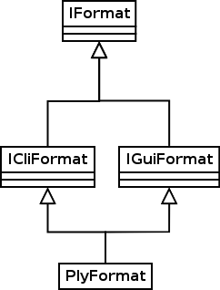
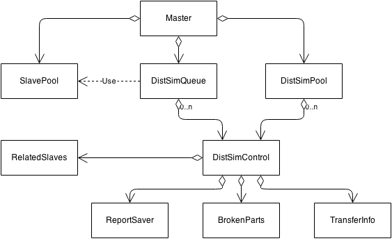

Bachelor Eindwerk
Groep Pluto
Door Ruben Mennes, Ruben Vereecken, Eveline Ververs & Thomas Pinna
Overzicht
- Inleiding
- File Formaten
- Post Processing
- Visualisatie
- Distributed Simulation
- Slot
Inleiding
(ga naar beneden!)
File Formaten
- Inleiding
- Conversie
- Simulatie
Inleiding
- PLY formaat
- Breadth first doorlopen van ptree
Conversie
- Design
- analoog aan xml/xml.gz
- + minder opzoekwerk code
- + makkelijk uitbreidingen doorvoeren
- CLI & GUI

Simulatie
- Design
- Analoog aan xml/xml.gz
- Simulaties starten
- Export
- Problemen met export naar ply
Post Processing
- Inleiding
- tsv Formaat
- Gui
Inleiding
tsv Formaat
- Design
tsv Formaat
- 2 vormen
- TYPE ATTRIBUTE
- Aanpasbaar
- Overzichtelijk
- STEP TYPE ATTRIBUTE ID VALUE
- Attributes volgen doorheen simulatie
- Makkelijk visualiseren
GUI
- Load Vleaf file(s)
- Selection Widget
- Import/Export Selection
- Save
Distributed Simulation
- Inleiding tot het probleem
- Architectuur
- Protocol
- Slave beheer en Master lookup
- Fouten tolerantie
- Demo
Inleiding tot het probleem
Inleiding tot het probleem
- Verschillende afzonderlijke simulaties kunnen een koppling hebben
- 1 simulatie runnen is een zwaar process. Meerdere niet aan te raden op 1 machine
- Simulaties laten runnen en enkel de output files zijn belangrijk
Oplossing
Severs terbeschikking stellen die het process beheren en uitvoeren
Architectuur
Architectuur
Algemeen

- Client en masters communiceren met elkaar
- Master en slaves communiceren met elkaar
Architectuur
Slave

- Slave krijgt berichten van de master
- Slave zal de VLeaf2_Sim::Sim aansturen
- Na enkel stap zal de ChemTransfer de gevraagde waarde doorsturen naar Master
Architectuur
Master
- Master is de instantie die de SlavePool, DistSimPool en ClientHandler aanmaakt, opstart en controleerd
- Client handler zal alle Client requist afhandelen en alle beschibare clients bijhouden
- SlavePool bevat al de Slaves die momenteel niet behoren tot een sessie
- DistSimPool bevat al de lopende sessies
Architectuur
Master
- DistSimControl bevat 1 enkele sessie en zal deze controleren
- ReletadSlaves bevat al de Slaves die behoren tot deze sessie
- Coupler is de instantie die de daadwerkelijke koppling op zich neemt
- Observer zal er voor zorgen dat de output files worden opgeslagen
Protocol
Protocol
- Protocol gebaseerd op bestaande protocol van Parex
- TCP-socket tussen Master en Clients en tussen Master en Slaves
- Structuur van een bericht is XML (gebruik van ptree)
Protocol
Structuur
<Control>{Naam van de berichtstructuur}
<ID>{Session ID indien nodig}</ID>
<Data>{Andere nodige data voor dit bericht}</Data>
</Control>
Protocol
Structuur: Voorbeeld
<Control>Join
<ID>1</ID>
<Data>100</Data>
</Control>
Protocol
Uitzonderingen t.o.v. afgesproken protocol
- Ander 'startSimulation' message
- Ondersteuning van meerdere output formaten op de Master
- Alle TCP-berichten worden gezipt
- Zowel voor Distributed session als voor Parex
- Berichten (met SimState) tot meer dan 8 keer kleiner
- Minder bandbreedte wordt gebruikt
Slave beheer en Master lookup
Slave beheer en Master lookup
Slave beheer: Probleem
- Als slaves crashen moeten deze manueel worden heropgestart
- Bij manueel heropstarten moet IP adres en poort van master gekend zijn
- Slaves kunnen maar verbinding maken als de Master zelf ook actief is
Slave beheer en Master lookup
Slave beheer: Oplossing
- Slaves worden beheerd door een slave_deamon
- Opstarten van slaves als master die hiernaar vraagt
- Kijkt na of slaves gecrashed zijn
- Master bevat lijst met mogelijke slave machines
- Master zal elke 5 seconde UDP bericht sturen naar deze machines
- Als deamon merkt dat er minder slaves runnen dan master vraagt start hij er op
Slave beheer en Master lookup
Master lookup: Probleem
- Clients moeten IP adres en poort van master kennen
- Als client een session wilt joinen ook het session ID
Slave beheer en Master lookup
Master lookup: Oplossing
- Client kan UDP broadcast sturen met vraag naar masters
- Masters zullen antwoorden met UDP bericht en bevat:
- Poort waarmee client verbinding moet maken
- Alle lopende sessies op die machine
Fouten tolerantie
Fouten tolerantie
Mogelijke problemen
- Slave crashed
- Verbinding met slave verbroken
- Te weinig slaves beschikbaar
- Master crashed
Fouten tolerantie
Slave crashed of verbinding met slave verbroken
- DistSimControl beschikt over ReportSaver deze zal het laatste report bijhouden
- DistSimControl beschikt ook over TransferInfo waarin staat welke slaves welke info moeten terug sturen
- Als DistSimControl merkt dat slave gecrashed of niet berijkbaar is haalt hij andere uit SlavePool en initializeerd ALLE slaves opnieuw
Fouten tolerantie
Wat als er geen slaves beschikbaar zijn?

- Zelfde princiepe als vorige probleem
- DistSimControl wordt in Queue gezet en BrokenParts worden aangeduid
- Vanaf er genoeg Slaves vrijzijn om de eerste simulation in de queue te laten verderdoen wordt DistSimControl uit queue gehaald
- Alle Slaves worden terug geherinitialiseerd
Fouten tolerantie
Wat als master crashed
Voorlopig nog geen oplossing voor
Demo
Visualisation
- Inleiding
- Moeilijkheden & Keuzes
- Architectuur
- Resultaat en vergelijking
Inleiding
- Huidige viewer in Qt geïmplementeerd
- Vraag naar OpenGL viewer
- Richting 3D (in de toekomst)
- Viewer met reliëf
Moeilijkheden & Keuzes
- OpenGL Compatibiliteit
- GL 3.1 + Compatibility Profile
- Gebruik van shaders? Uiteindelijk niet.
- Correcte weergave van schaduw
Architectuur

- Alle implementatie in GLDrawer
- Zeer low level
- Performantiewinst
Vergelijking
Resultaat
Feature: Rotatie

Dynamic Attributes
- Inleiding
- Moeilijkheden en Keuzes
Inleiding
- huidig: chemische attributen in Mesh structuur
- uiteindelijk doel:
- Mesh en "Tissue" scheiden in code
- Dynamisch Chemische attributen toevoegen/verwijderen/aanpassen
- Model inlezen uit xml
Moeilijkheden en keuzes
- Aparte "container" dynamic_attributes
- Integratie dynamic_attributes in code
- Formaat model
Moeilijkheden en keuzes
"container" dynamic_attributes
ook methodes voor Node en Wall + methodes die een volledig model (voor cell, node en wall inlezen)
Moeilijkheden en keuzes
Integratie dynamic_attributes in code
- Mesh bevat Dynamic_Attributes object
- De klassen Cell-/Node-/WallAttributes krijgen pointer naar object (via constructor)
- bestaande methodes door methodes uit dynamic_attributes
- assignment operators toegevoegd
- MeshBuilders aangepast zodat ze attributen ook kopiëren
Moeilijkheden en keuzes
Formaat Model
<cell_attributes_array>
<attribute>
< name>
attributeName
</name>
< type >
int
</type>
< default >
7
</default>
</attribute>
</cell_attributes_array>
Also for Node and wall. Supported attributes are int, string, double.
DataStructuur
- Inleiding
- Implementatie
- performancewinst
Inleiding
- huidige situeatie
- cells, nodes en walls gealloceerd op stack
- vaak ver uiteen
- veel cachemisses!
- gebruik van vector<shared_pointer<Cell>> voor lifetime management
- doel:
- performancewinst bereiken door cachemisses minimaliseren
- betere liftetimemanagement
Implementatie
We maken gebruik van een geoptimaliseerde datastructuur, die memory managet:- intern een vector<array<T>>
- T is een cell/node of wall in dit project
- gevolg:
- geheugen in blokken gealloceerd
- cells, nodes en walls dichter bij mekaar in code
- high locality of data => minder cachemisses
resultaat
- globaal gezien 16.41% performancewinst
- TipGrowth: 2% (kortste test in tijd)
- Demo1:22.96% winst (langste in tijd)